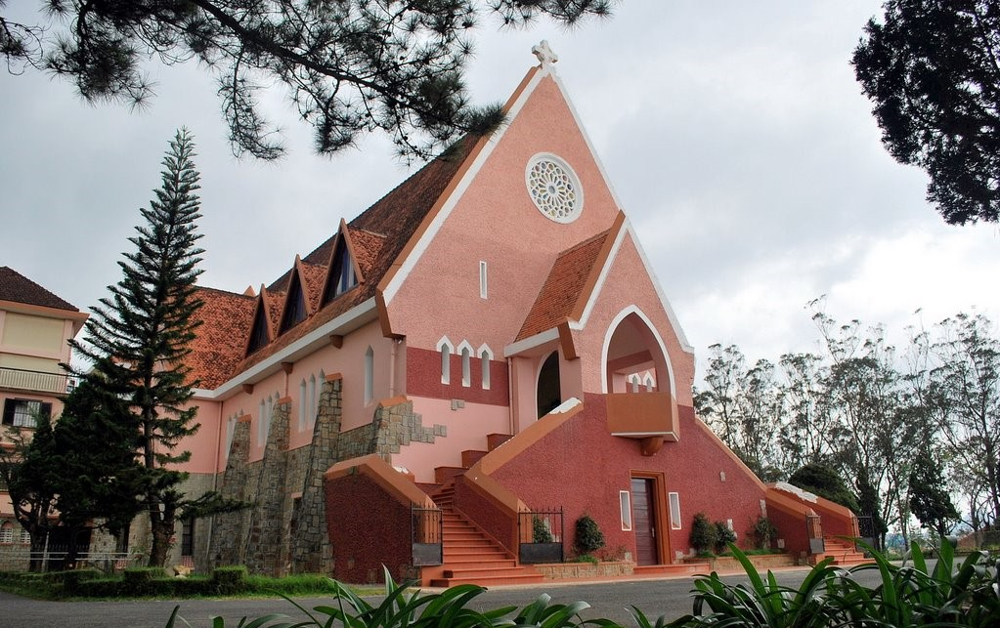
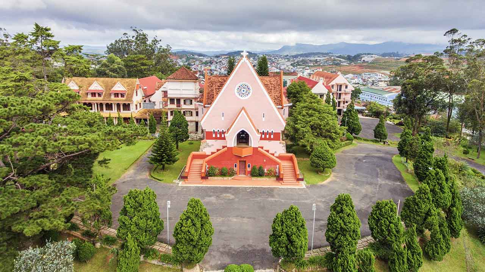
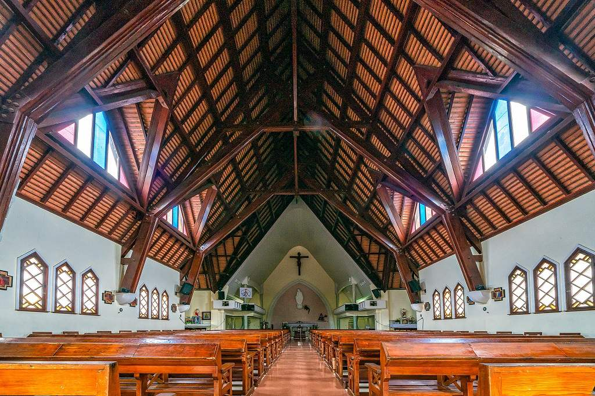
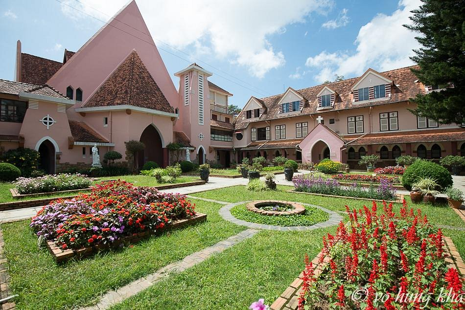

Nhà thờ Domaine de Marie, hay còn gọi là Nhà thờ Mai Anh, là một trong những công trình kiến trúc đặc biệt và nổi bật tại thành phố Đà Lạt, tỉnh Lâm Đồng. Nằm trên đỉnh đồi Mai Anh, cách trung tâm thành phố khoảng 2 km về phía Tây Nam, nhà thờ không chỉ thu hút du khách bởi vẻ đẹp kiến trúc độc đáo mà còn gắn liền với những câu chuyện lịch sử và văn hóa đặc sắc của Đà Lạt.

Nhà thờ Domaine de Marie được xây dựng vào những năm 1930, dưới sự chỉ đạo của các linh mục người Pháp, mang đậm dấu ấn của phong cách kiến trúc châu Âu cổ điển pha trộn với các yếu tố truyền thống của Việt Nam. Một trong những điểm nổi bật của nhà thờ là màu sắc hồng đặc trưng của tường, tạo nên vẻ đẹp rực rỡ và ấm cúng. Mái nhà thờ được thiết kế theo hình tháp nhọn, không giống các nhà thờ có tháp chuông cao như thường thấy, mà có kiểu mái ngói dốc với hình dáng đơn giản nhưng thanh thoát.

Điểm đặc biệt trong thiết kế của nhà thờ là các cửa sổ kính màu được làm theo hình ảnh các loài hoa, mang đến không gian ánh sáng huyền ảo, lung linh khi có ánh nắng chiếu vào. Nội thất của nhà thờ cũng rất tinh tế, với những hàng ghế gỗ mộc mạc, các bức tranh tôn vinh Đức Mẹ Maria và các tượng thánh được đặt trang trọng. Chính sự kết hợp hài hòa giữa kiến trúc Pháp cổ kính và những yếu tố đặc trưng của Việt Nam đã làm cho Domaine de Marie trở thành một biểu tượng đặc biệt của Đà Lạt.
Domaine de Marie không chỉ là một công trình tôn giáo mà còn là nơi ghi dấu sự ảnh hưởng của nền văn hóa Pháp đối với Đà Lạt trong giai đoạn đầu thế kỷ 20. Nhà thờ được xây dựng trên diện tích rộng lớn, bao gồm khuôn viên rộng rãi, vườn hoa và cây xanh mát mẻ, tạo thành một không gian yên tĩnh, thanh bình. Đây là nơi sinh sống và làm việc của các nữ tu thuộc dòng Nữ tu Bác ái Thánh Vinh Sơn, một dòng tu được thành lập để chăm sóc các em cô nhi và những người nghèo khổ tại Đà Lạt.

Lịch sử của nhà thờ gắn liền với việc phát triển thành phố Đà Lạt và sự đóng góp của các tu sĩ trong việc xây dựng cộng đồng và phát triển giáo dục. Khuôn viên của nhà thờ cũng chính là nơi trú ngụ của những người dân địa phương, nơi họ tìm được sự an ủi, nâng đỡ và chia sẻ trong cuộc sống.